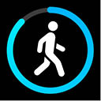

Aktywność fizyczna
Zastosowanie nowoczesnych technologii umożliwia również bieżące monitorowanie podstawowych parametrów zdrowotnych, takich jak liczba wykonanych kroków, pokonany dystans czy szacunkowa liczba spalonych kalorii, co sprzyja wzrostowi świadomości na temat stanu własnego organizmu oraz postępów w zakresie aktywności fizycznej.
Warto również podkreślić, iż współczesne technologie umożliwiają budowanie wirtualnych społeczności, w których młodzi ludzie mają możliwość dzielenia się swoimi osiągnięciami, podejmowania wyzwań oraz wzajemnego motywowania się do aktywności. Aspekt społecznościowy stanowi dodatkowy czynnik wzmacniający motywację i poczucie przynależności, co jest szczególnie istotne w kontekście kształtowania trwałych, prozdrowotnych
nawyków.
1.6.2. Bezpłatne aplikacje z elementami grywalizacji do monitorowania aktywności fizycznej dla uczniów
StepsApp to bezpłatna aplikacja typu krokomierz, która monitoruje codzienną aktywność fizyczną i wykorzystuje czujniki w telefonie (lub zegarku) do pomiaru: liczby wykonanych kroków, przebytego dystansu, liczby kalorii, a także prowadzi statystki tygodniowe i miesięczne. Może być wykorzystywana jako narzędzie edukacyjne do: zwiększania świadomości ruchowej, obserwacji własnych nawyków, monitorowania aktywności w ramach projektów zdrowotnych oraz rozwijania samokontroli i odpowiedzialności za zdrowie (rycina V.1.6).
Rycina V.1.6.
Aplikacja StepsApp
Źródło: Google Play Store.
https://play.google.com/store/apps/details?id=com.stepsappgmbh.stepsapp&hl=en. Dostęp 4.01.2025.
404
